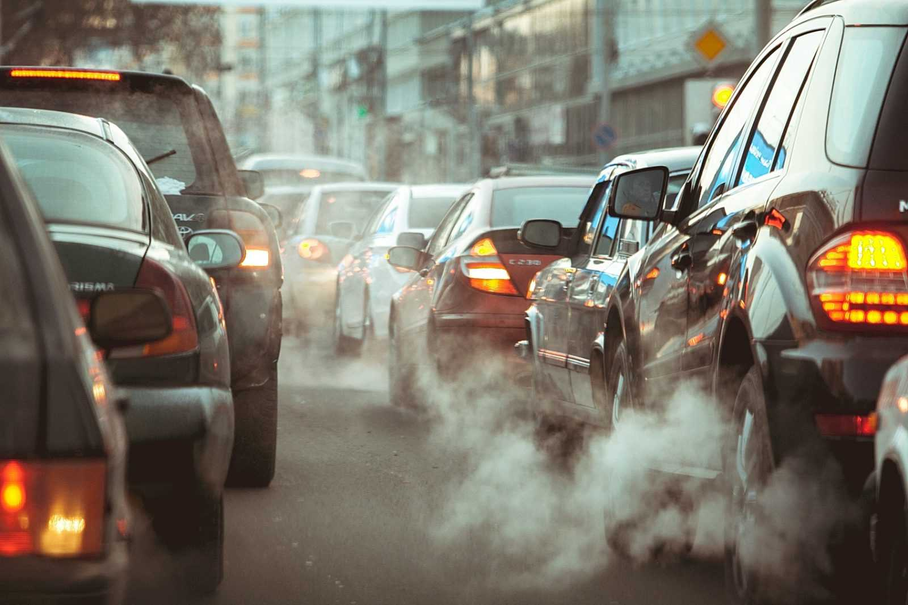
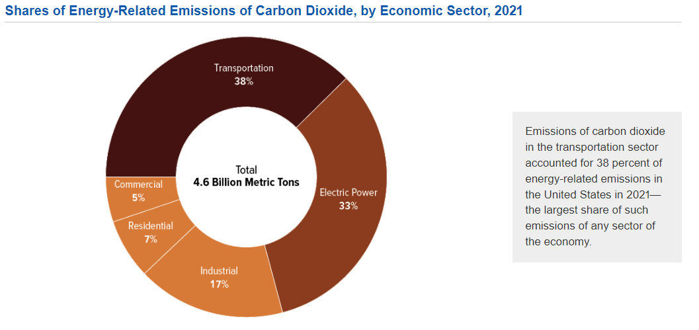
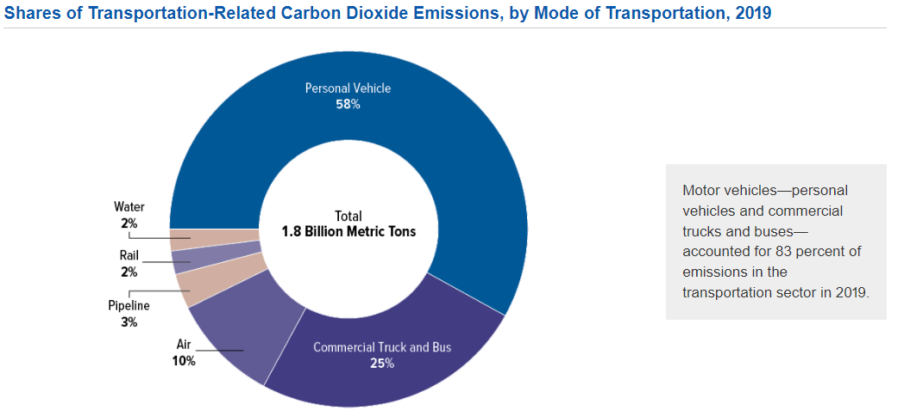
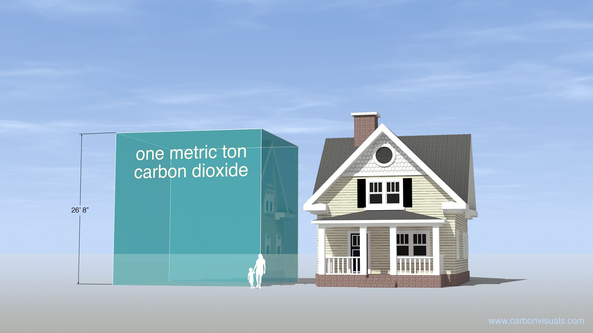
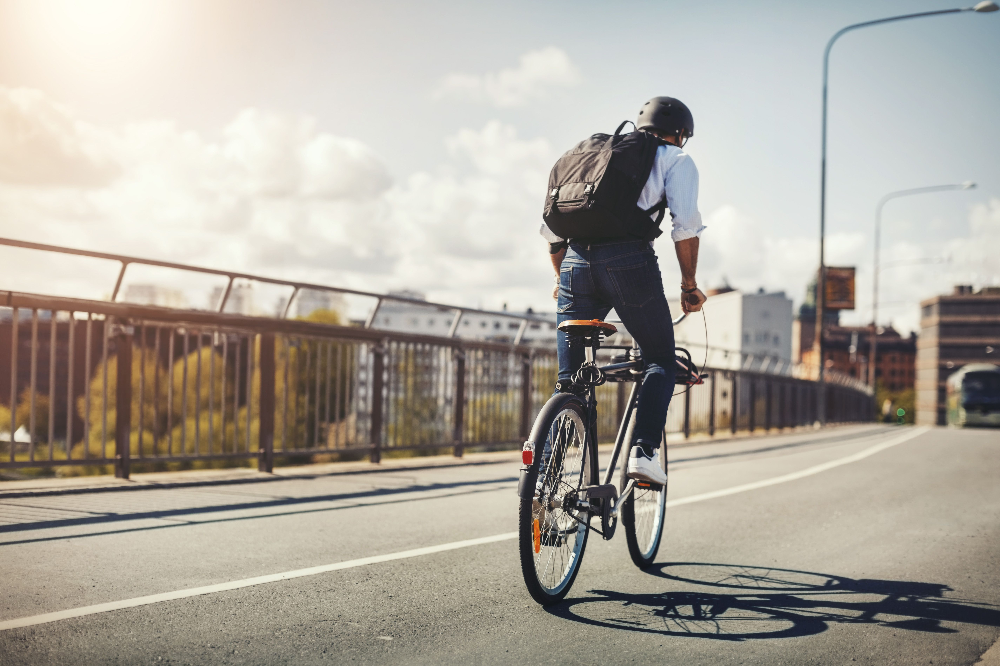
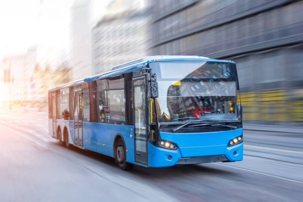

Empowering eco-friendly commutes to reduce pollution and restore nature.
of 2021 greenhouse gas emissions are caused by transportation
billion gas- and diesel-powered vehicles on the world's roads
deaths are attributed to air pollution (2018)
Daily commuting, especially by gas-powered vehicles, contributes significantly to air pollution and environmental degradation. Emissions from exhausts release pollutants like nitrogen oxides and particulate matter, degrading air quality and harming public health. Prolonged exposure to these pollutants can lead to respiratory diseases and other health issues, impacting both urban and rural areas.

Here are two pie charts to help you visualize the magnitude of transportation pollution.
 For reference, here is a depiction of one metric ton of carbon dioxide.
Taking action in the face of environmental challenges is essential. Opt for eco-friendly transportation methods like biking, walking, public transport, and carpooling to significantly decrease your carbon footprint and enhance air quality. These alternatives not only cut emissions but also alleviate traffic congestion, fostering a healthier lifestyle and a more connected community.
Embracing these choices diminishes our reliance on fossil fuels and promotes cleaner air. Public transportation efficiently transports multiple passengers in one vehicle, easing traffic and reducing stress. Carpooling offers a shared travel solution that not only minimizes vehicles on the road but also cultivates bonds within communities. By selecting these sustainable transportation options, you actively contribute to a greener future while enjoying immediate benefits for yourself and the environment.
 
This image displays the capability of public transportation to drastically reduce traffic congestion and improve levels of greenhouse gas emissions.
Join the movement for a cleaner environment. Choose eco-friendly transportation and be a part of the solution. Your small actions can lead to a big impact on air quality and our planet's health.
Explore Resources